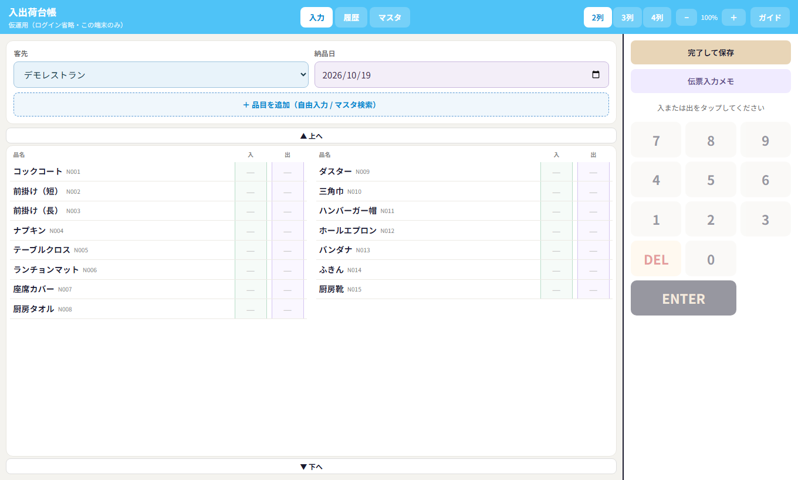
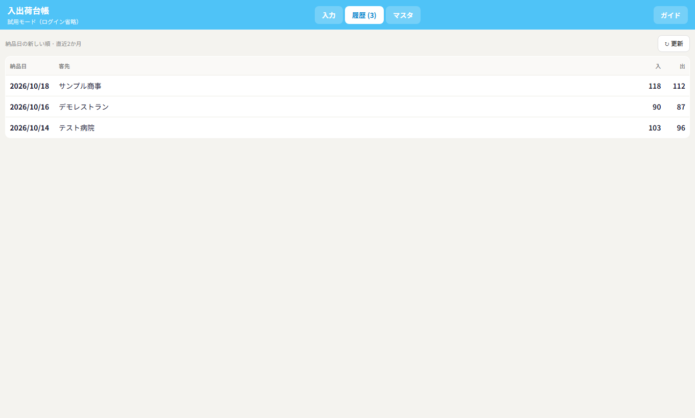
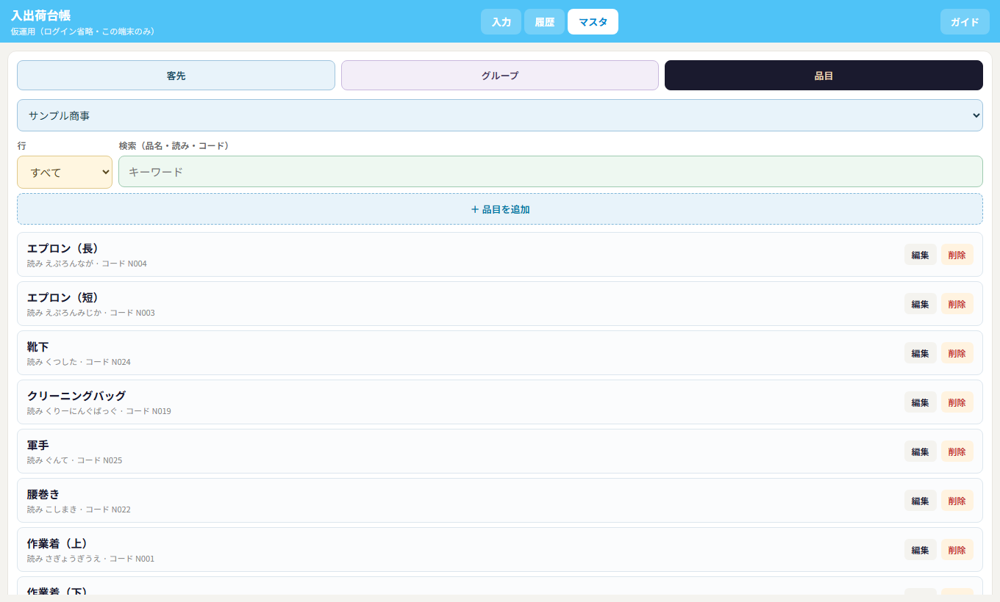
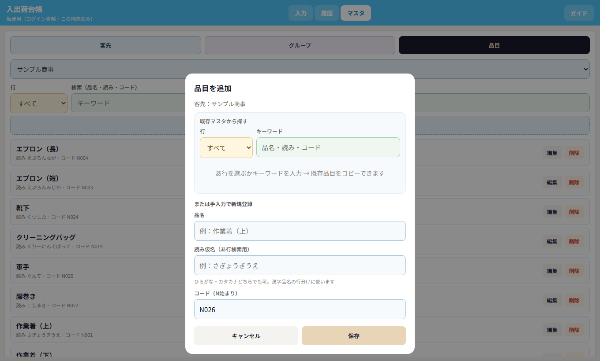

1. はじめに
客先ごとのリネン・ユニフォームなどを「入（回収）」「出（納品）」の数量で記録し、履歴に残すアプリです。手書き台帳の代わりに、タブレットで現場入力できます。
- 画面上部の 入力 / 履歴 / マスタ で切り替えます。
- タブレットは横置きが使いやすいです（右側にテンキー）。
- 「アプリをインストール」でホーム画面に置けます（対応ブラウザ）。
印刷するときは、このページ右上の「印刷する」→ プリンタまたは「PDFに保存」を選んでください。
2. 端末の役割
| 端末 | やること |
|---|---|
| PC | 客先・グループ・品目の登録・編集・削除。入力も可 |
| タブレット | 現場の入出荷入力（横置き想定）。客先・品目の追加・編集も可 |
想定端末は PC とタブレットです。
3. 入力画面

- 客先を選ぶ → その客先の品目が一覧表示されます。
- 納品日を確認・変更します。
- 品目の 入 または 出 をタップします。
- 右のテンキーで数量を入れ、ENTERで同じ欄の次の品目へ進みます。
- 終わったら 完了して保存。
表示の切り替え
- 2列 / 3列 / 4列 … 品目の並び列数。2列のとき、画面にだいたい15行入る大きさが基準です。
- − / ％ / ＋ … 文字・マスの拡大縮小。
色の目安
- 入のマス … 薄い緑
- 出のマス … 薄い紫
- 入と出の数が違うとき … 出が赤くなります
品目をその場で足す
「＋ 品目を追加」から、自由入力またはマスタ検索ができます。すでにマスタにある名前は「登録済み」としてマスタ側が追加されます。
伝票入力メモ
「出」の数量を確認する画面です。伝票アプリへ転記するときに使います。
4. 履歴画面

- 保存した台帳が、納品日の新しい順に並びます。
- 行をタップすると明細を確認できます。
- ここから「伝票入力メモ」も開けます。
5. マスタ画面
客先・グループ・品目を管理します。タブの色で種類が分かります。
- 客先 … 登録・並べ替え・グループ分け
- グループ … 飲食 / 医療 などのまとめ
- 品目 … 客先ごとの品名・読み・コード

品目の登録
- 品目タブで客先を選ぶ
- 「＋ 品目を追加」
- 上の検索で既存品目を探して「使う」、または手入力
- 読み仮名・コードを確認して保存

コードは N001 のような N 始まりです。空欄なら自動で採番されます。
6. あ行検索と読み仮名
漢字の品名を「あ行・か行…」で探すには、読み仮名が必要です。
- マスタの品目編集で「読み仮名」を入れます（ひらがな・カタカナどちらでも可）。
- 読みがない漢字は「その他」に入ります。
- 選択マスの色：客先＝水色、行＝薄黄、検索＝薄緑。
入力の「マスタ検索」でも、マスタ品目一覧でも、同じあ行プルダウンが使えます。
7. 便利な操作
- テンキーの ENTER … 同じ「入」または「出」のまま次の品目へ
- 別のマスをタップ … いまの入力を確定して移動
- DEL … 1桁消す
- 一覧の ▲上へ / ▼下へ … 画面をスクロール
- 表示が古いとき … Ctrl＋F5（またはブラウザの再読み込み）
8. 一日の流れ（例）
- タブレットでアプリを開く
- 客先を選んで入・出を入力
- 完了して保存
- 必要なら伝票入力メモを見ながら、伝票アプリで納品書を発行
- 客先や品目のメンテはPCまたはタブレットのマスタから
この資料は現場操作・客先説明用です。印刷はブラウザの「印刷する」または Ctrl＋P からPDF保存もできます。